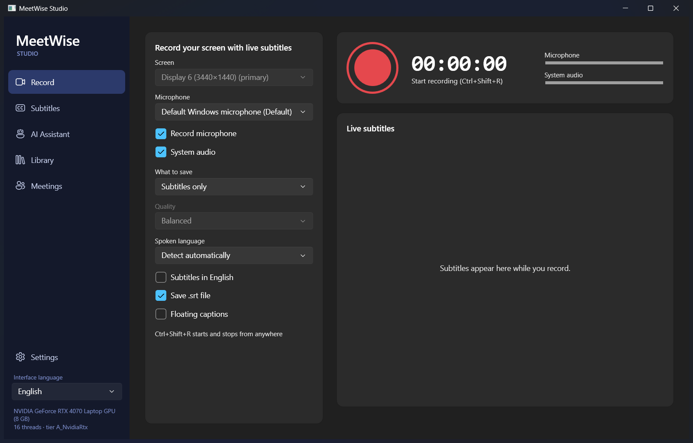
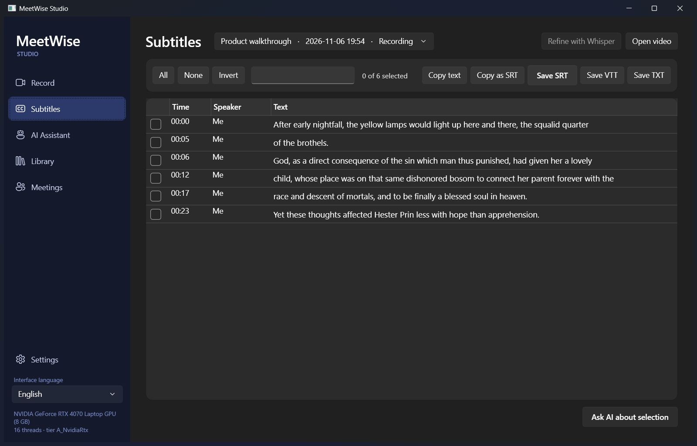
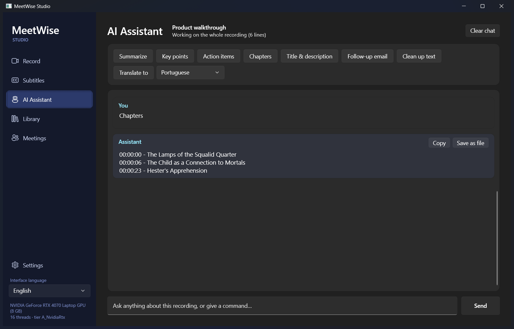
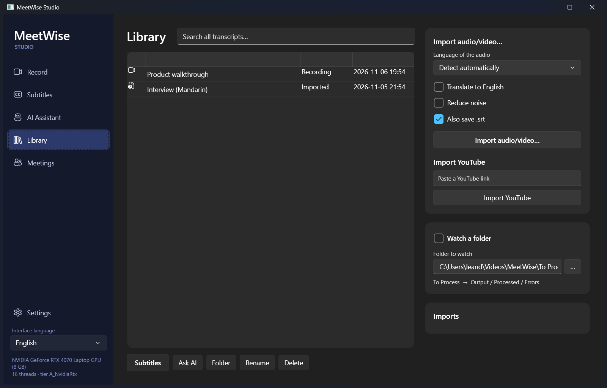
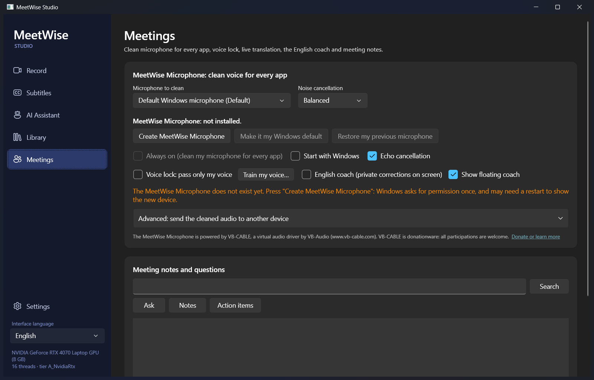
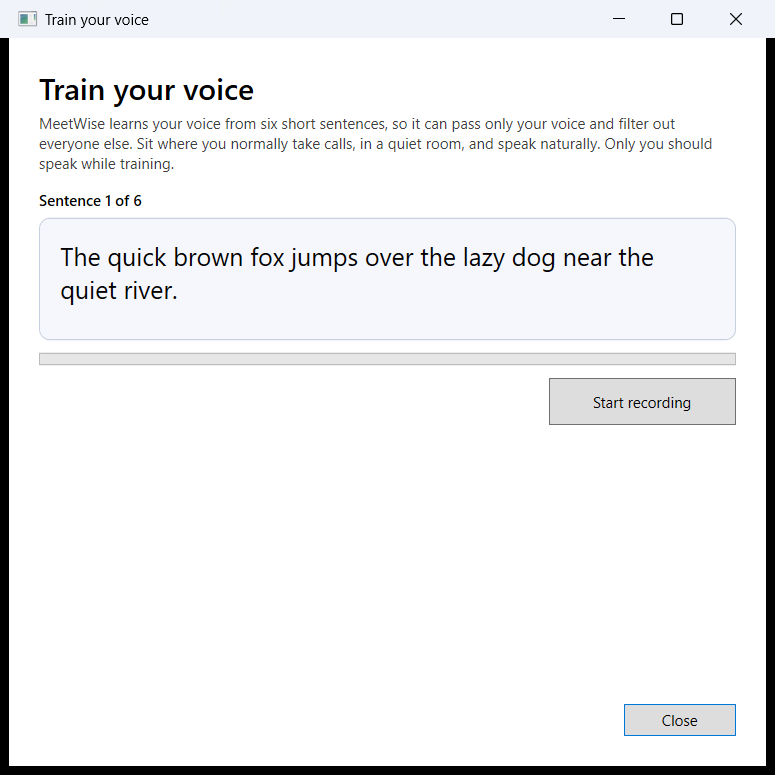

An AI assistant for your meetings that runs on your own PC. It records what you hear and say, cleans up your microphone, transcribes live, and turns each meeting into notes, action items and answers. Everything works offline; a cloud API key is an optional upgrade.
Krisp-style audio clean-up, meeting intelligence and recording, combined in one app. Nothing leaves your machine unless you choose a cloud provider.
Record a monitor like RecBox while subtitles appear live in any language. When you stop, tick the lines you want and copy or save SRT, VTT or TXT. Then ask the AI to summarize, list action items, write chapters or translate.
Import audio or video (track chosen by language, optional noise filter), paste a YouTube link, or let a watched folder subtitle everything you drop in it.
Records your microphone and the system audio as two separate channels, so no bot joins the call and "me" and "others" are kept apart.
WorkingStreaming speech-to-text with partial results and timestamps, plus a Whisper "Refine" pass that runs on the GPU for higher accuracy in 99 languages.
WorkingThree noise-suppression levels, adaptive echo cancellation, and a voice-isolation mode that keeps only the voice you enrolled.
WorkingNotes, decisions, risks and action items with owners and dates. Ask questions across all meetings and get answers with timestamp citations.
WorkingReads any iCal calendar, reminds you before meetings, offers to record when Zoom, Teams or Meet starts, and prepares a brief from earlier meetings in the same series.
WorkingShows other people's speech as captions in your language, and can speak your sentences translated into a chosen device.
WorkingScreen recording with NVENC, Quick Sync, AMD AMF or x264 (picked automatically), joined into one MP4 with both audio channels.
WorkingOne click creates a real microphone in Windows Sound settings. Set it as your default and every app (Zoom, Teams, Meet, Discord) hears your cleaned voice. Powered by the signed VB-CABLE driver.
One click, one Windows promptRead six sentences and MeetWise learns your voice, then passes only you and removes other people. Measured: a second speaker is cut by 19 to 47 dB while your voice passes at the same level.
WorkingWhile you speak English, a small floating window shows your sentence with the mistake struck through and the fix highlighted. Only you see it. On a test set it caught 15 of 15 mistakes with 0 false alarms.
WorkingAudio is processed in small blocks, so nothing waits for a whole meeting to finish. Heavy work (the high-accuracy transcript, speaker naming, notes) runs after the meeting, one model at a time.
Two WASAPI streams: your mic and the loopback of what your PC plays. Recording survives device changes and sleep.
Echo cancellation, then noise suppression or voice isolation in 10 ms blocks, real-time factor 0.06 to 0.29 on the dev machine.
Streaming recognisers, one per channel, run on worker threads so audio capture is never blocked.
Whisper re-transcribes each channel, the speakers are labelled, and the local LLM writes notes and action items.
The Studio has five pages: Record, Subtitles, AI Assistant, Library and Meetings. These are real screenshots from the development build on an RTX 4070 Laptop.






Audio, transcripts, voice profiles (stored as numeric embeddings, never recordings), the database and every model. Notes, Ask and translation use the local LLM by default.
An Anthropic key or any OpenAI-compatible server (OpenAI, Ollama, LM Studio). Keys are encrypted with Windows DPAPI and never written to settings.json. Calendar feeds, webhooks and model downloads are the other network uses.
At first run MeetWise detects your GPU and VRAM and picks sensible defaults. You can override them in Settings.
| Tier | Detected as | Defaults |
|---|---|---|
| A | NVIDIA with 6 GB or more | Whisper large-v3-turbo and Qwen3-8B on the GPU; all noise modes |
| B | Any other GPU | Whisper small, Qwen3-4B |
| C | CPU only | Whisper base or small, Qwen3-4B on the CPU, or an API key |
The NVIDIA CUDA 13 libraries (about 400 MB) are downloaded from NVIDIA when you agree. You do not need to install the CUDA Toolkit. On 8 GB cards, the LLM is released before Whisper loads, so the two never compete for VRAM.
Requires Windows 11 x64 and the .NET 10 SDK. Models download on first use (resumable, SHA-256 verified).
git clone https://github.com/lcarlini/MeetWise
cd MeetWise
dotnet build MeetWise.slnx -c Release
dotnet test tests/MeetWise.Tests -c Release # 80 tests, incl. real models and devices
powershell -ExecutionPolicy Bypass -File start.ps1 # build latest and launchCheck a published build's components with MeetWise.App.exe --selftest report.txt. It writes a report and exits with 0 when every required part loads.
MeetWise's own virtual-audio driver (the MeetWise Microphone uses VB-Audio's signed VB-CABLE instead, because Windows with Secure Boot only loads signed drivers); cleaning the other participants' audio before it reaches your speakers; true accent conversion (no usable streaming model exists); screens for tags, folders and speaker renaming; a mobile app; phone-call recording; a meeting-bot option; the Inno Setup installer.
Installing the MeetWise Microphone and hearing it inside a real call (the installer needs a Windows administrator prompt and could not be run unattended); real room echo; automatic downgrade under real CPU overload; spoken translation into a virtual microphone; the Anthropic and OpenAI calls (stub server only); live calendar feeds.